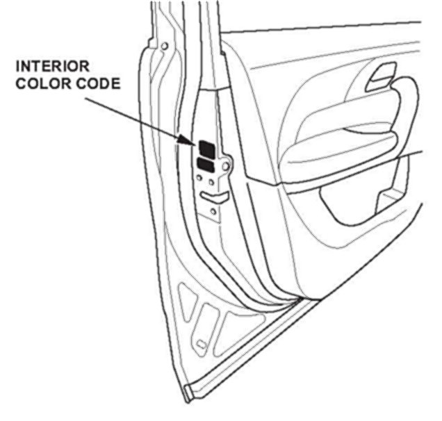

Interior - Dashboard Side Covers Fit Poorly
08-039August 6, 2008
Applies To:
2007 MDX - ALL
2008 MDX- From VIN 2HNYD28..8H500001 thru 2HNYD28..8H545350
Dashboard Side Covers Fit Poorly
SYMPTOM
There are gaps between the driver's and/or passenger's dashboard side covers and the dashboard.
PROBABLE CAUSE
The dashboard side cover attachment hooks do not hold the cover in the proper position.
CORRECTIVE ACTION
Replace the affected dashboard side cover(s) with updated parts. If you replace the passenger's side cover, also replace the dashboard wood trim with the updated trim.
PARTS INFORMATION
WARRANTY CLAIM INFORMATION
In warranty:
The normal warranty applies.
Failed Part: P/N 77100-STX-AO2ZA
Defect Code: 00401
Symptom Code: 00101
Skill Level: Repair Technician
Out of warranty:
Any repair performed after warranty expiration may be eligible for goodwill consideration by the District Parts and Service Manager or your Zone Office. You must request consideration, and get a decision, before starting work.
REPAIR PROCEDURE

1. Write down the vehicle interior color code (Type B, Type D, Type F, or Type H) from the label on the driver's door. Use the color code to order the correct replacement part(s).
2. Replace the affected dashboard side cover(s). If you replace the passenger's side cover, also replace the dashboard wood trim.
^ Driver's side: Refer to page 20-118 of the 07-08 MDX Service Manual or, online, enter keywords DASH TRIM, and select Driver's Outer Dashboard Trim Removal/Installation.
^ Passenger's side: Refer to page 20-124 of the 07-08 MDX Service Manual or, online, enter keywords DASH TRIM, and select Passenger's Dashboard Trim Removal/Installation.
3. Make sure that the new cover(s) and the wood trim (if applicable) fit properly with no gaps.

Disclaimer